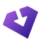

Obtainium Apps v0.0.2. Original 72 × 72 RGBA master, shown without repainting or enlargement beyond its native size.

18 pxThe existing icon belongs to the upstream product identity. A new logo would blur that relationship. Keep the original pixels and pair the mark with the project name. The marketing improvement comes from accurate copy and real product screenshots, not a competing Obtainium brand.